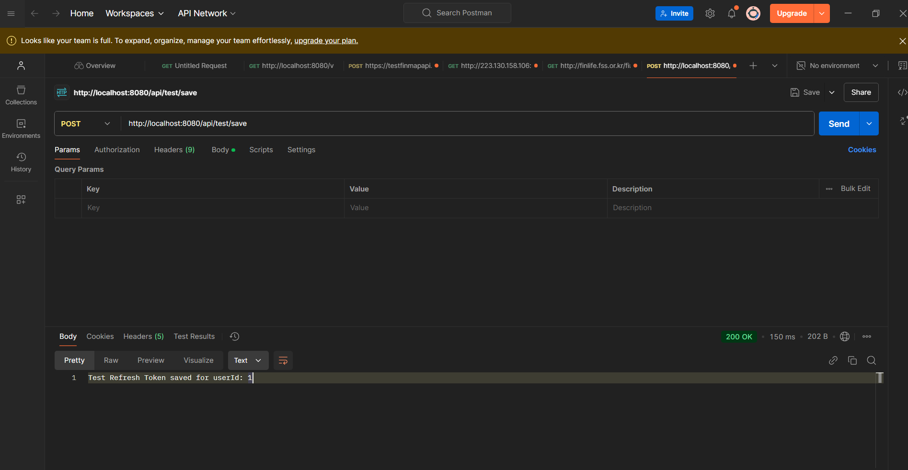
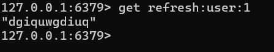
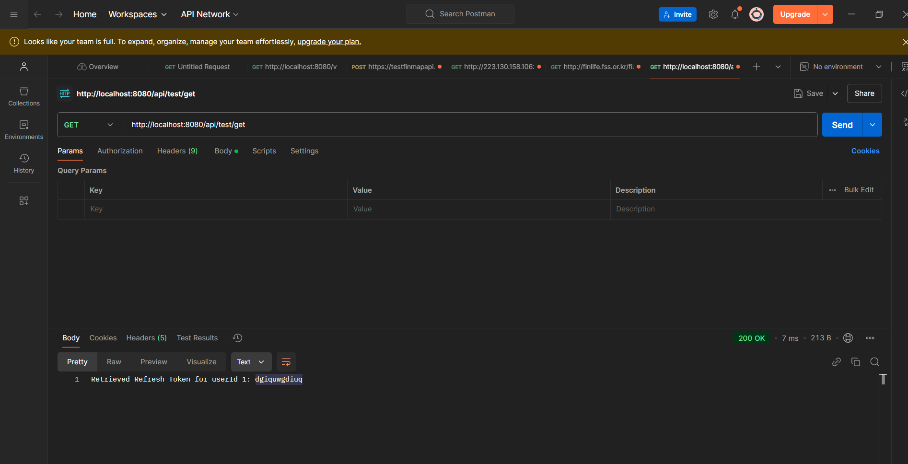
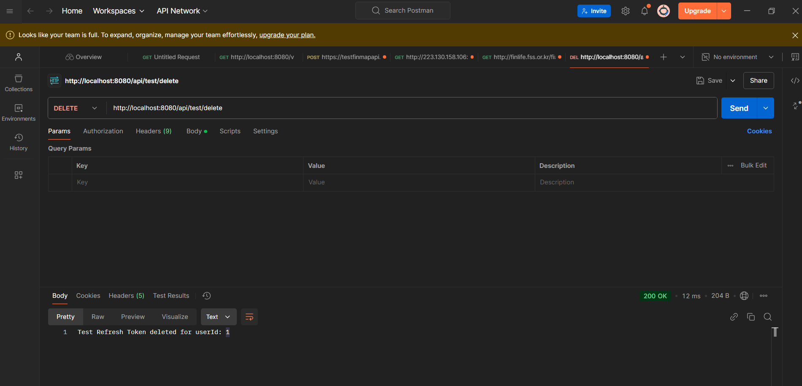
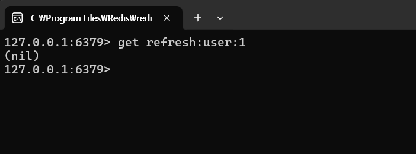

- 예시 api
@RestController
@RequestMapping("/api/test")
@RequiredArgsConstructor
public class TestRefreshTokenController {
private final RedisTemplate<String, String> redisTemplate;
/**
* Refresh Token 저장 (테스트용)
*/
@PostMapping("/save")
public String saveTestToken() {
Long userId = 1L;
String refreshToken = "dgiquwgdiuq";
long ttl = 3600L; // 1시간 (3600초)
// Redis에 저장
String key = "refresh:user:" + userId;
redisTemplate.opsForValue().set(key, refreshToken, ttl, TimeUnit.SECONDS);
return "Test Refresh Token saved for userId: " + userId;
}
/**
* Refresh Token 조회 (테스트용)
*/
@GetMapping("/get")
public String getTestToken() {
Long userId = 1L;
// Redis에서 조회
String key = "refresh:user:" + userId;
String refreshToken = redisTemplate.opsForValue().get(key);
return refreshToken != null
? "Retrieved Refresh Token for userId " + userId + ": " + refreshToken
: "No Refresh Token found for userId: " + userId;
}
/**
* Refresh Token 삭제 (테스트용)
*/
@DeleteMapping("/delete")
public String deleteTestToken() {
Long userId = 1L;
// Redis에서 삭제
String key = "refresh:user:" + userId;
redisTemplate.delete(key);
return "Test Refresh Token deleted for userId: " + userId;
}
}
Save api 호출
http://localhost:8080/api/test/save
- 실행 결과

Get api 호출
http://localhost:8080/api/test/get
Delete api 호출
http://localhost:8080/api/test/get
